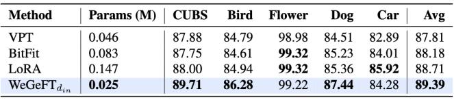
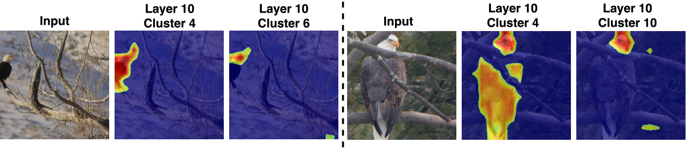

Visual Recognition
FGVC Benchmark

Results on the finegrained visual classification (FGVC) tasks. The number of trainable parameters are reported without the classification head which has the same number of parameters for all the methods.

When WeGeFT is applied to fine-tune the projection layers in the multi-head self-attention modules of Vision Tranformers on image classification tasks, the output of the first linear layer \((C^l_{d_{out}\times r}=\omega^l_{d_{out}\times d_{in}}\cdot \phi_{d_{in}\times r})\) plays the role of a \(r\)-way segmentation/token-clustering head. This localization ability emerges as a by-product without any direct supervision for the segmentation maps, using the standard cross-entropy loss during fine-tuning. The maps can form on objects/parts in images, even handling occlusions (e.g., the bird body in the fifth column), and finding relevant objects (full bird, head in third column) even if the object occupies a small part of the image.